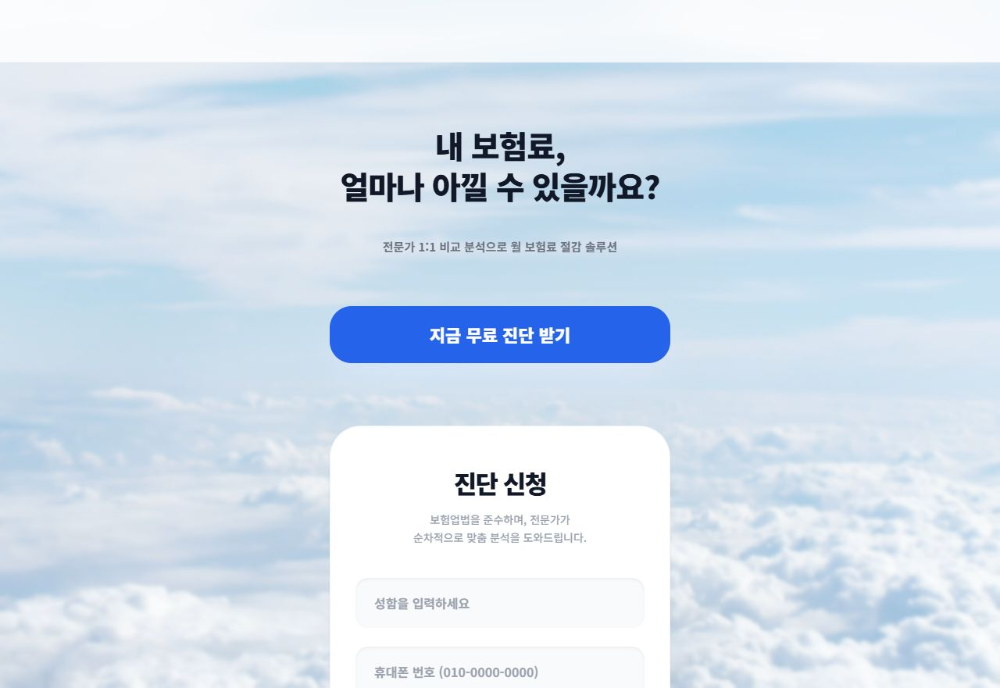

시작 버튼과 첫 행동의 장벽을 낮춥니다.
Participation Loop
참여형 사이트는 행동 루프가 선명해야 합니다.
참여형 페이지는 재미있는 기능 하나로 끝나면 안 됩니다. 사용자가 참여하고, 결과를 보고, 공유하거나 다시 시도하고, 마지막에는 전환 행동으로 이어지는 흐름이 필요합니다.

참여, 결과, 공유, 전환을 한 번의 흐름으로 묶습니다.
사용자가 자신의 결과를 이해하고 저장할 이유를 만듭니다.
결과 화면에서 공유, 재시도, 관련 콘텐츠 이동을 제공합니다.
상담, 가입, 구매, 문의 등 최종 CTA로 자연스럽게 연결합니다.
